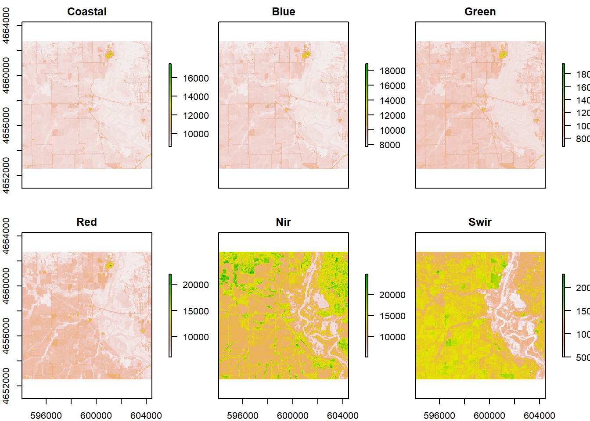

Lab-05: Rasters & Remote Sensing
Xuefei Gao
2020/9/7
library(tidyverse)
library(sf)
library(raster)
library(getlandsat)
library(mapview)
library(osmdata)
library(stats)
# Question 1
bb = read_csv("data/uscities.csv") %>%
filter(city == "Palo") %>%
st_as_sf(coords = c("lng", "lat"), crs = 4326) %>%
st_transform(5070) %>%
st_buffer(5000) %>%
st_bbox() %>%
st_as_sfc
# Question 2
meta = read_csv("data/palo-flood.csv")
files = lsat_scene_files(meta$download_url) %>%
filter(grepl(paste0("B",1:6,".TIF$", collapse = "|"), file)) %>%
arrange(file) %>%
pull(file)
st = sapply(files, lsat_image)
b = stack(st) %>%
setNames(paste0("band", 1:6))
plot(b)#The dimensions of the stacked image is 7811, 7681, the CRS is WGS84, and the cell resolution is 30, 30.
cropper = bb %>%
st_as_sf() %>%
st_transform(crs(b))
r = crop(b, cropper)
r = r %>%
setNames(c("Coastal", "Blue", "Green", "Red", "Nir", "Swir"))
plot(r)
#The dimensions of the cropped image is 340, 346, the CRS is WGS84, and the cell resolution is 30, 30.
# Question 3
#Without Color Stretch
#natural color
plotRGB(r, r = 4, g = 3, b = 2)#color infrared
plotRGB(r, r = 5, g = 4, b = 3)#false color water focus
plotRGB(r, r = 5, g = 6, b = 4)#Swir
plotRGB(r, r = 7, g = 6, b = 4)#With Color Stretch
#natural color
plotRGB(r, r = 4, g = 3, b = 2, stretch = "hist")#color infrared
plotRGB(r, r = 5, g = 4, b = 3, stretch = "lin")#false color water focus
plotRGB(r, r = 5, g = 6, b = 4, stretch = "lin")#Swir
plotRGB(r, r = 7, g = 6, b = 4, stretch = "hist")#The purpose of applying a color stretch is to contrast the images better by increasing the color range.
# Question 4
ndvi = (r$Nir - r$Red) / (r$Nir + r$Red)
ndwi = (r$Green - r$Nir) / (r$Green + r$Nir)
mndwi = (r$Green - r$Swir) / (r$Green + r$Swir)
wri = (r$Green + r$Red) / (r$Nir + r$Swir)
swi = 1 / (sqrt(r$Blue - r$Swir))
stack = stack(ndvi, ndwi, mndwi, wri, swi) %>%
setNames(c("NDVI", "NDWI", "MNDWI", "WRI", "SWI"))
palette = colorRampPalette(c("blue","white","red"))
plot(stack, col = palette(256))
#The 5 images are similar because all of them shows the surface water and other parts of the land separately by using different colors. The biggest differences of these images are they use different expressions for the dry land part. We can see in NDVI and NDWI, the districts are much clearer by using more colors while in MNDWI and WRI the districts of the land part are not that clear. And in SWI, the land part even disappear to emphasize the surface water area.
threshold1 = function(x){ifelse(x <= 0, 1, NA)}
threshold2 = function(x){ifelse(x >= 0, 1, NA)}
threshold3 = function(x){ifelse(x >= 1, 1, NA)}
threshold4 = function(x){ifelse(x <= 5, 1, NA)}
flood1 = calc(ndvi,threshold1)
flood2 = calc(ndwi, threshold2)
flood3 = calc(mndwi, threshold2)
flood4 = calc(wri, threshold3)
flood5 = calc(swi, threshold4)
s = stack(flood1, flood2, flood3, flood4, flood5) %>%
setNames(c("NDVI", "NDWI", "MNDWI", "WRI", "SWI"))
plot(s, colNA = "white", col = c("white","blue"))#Question 5
set.seed(09062020)
dim(r)## [1] 340 346 6values = getValues(r)
dim(values)## [1] 117640 6values = na.omit(values)
#In r, 117640 is the number of cells. In v, 117640 is the number of rows. Each row contains the data for one cell
kmeans = kmeans(values, 12, iter.max = 100)
kmeans_raster = r$Coastal
values(kmeans_raster) = kmeans$cluster
v1 = values(s$NDVI)
table1 = table(v1, values(kmeans_raster))
threshold5 = function(x){ifelse(x == 1, 1, 0)}
flood6 = calc(kmeans_raster, threshold5) %>%
setNames('KMeans')
s1 = addLayer(s, flood6)
plot(s1, colNA = "white", col = c("white","blue"))#Question 6
kabletable = cellStats(s, sum)
knitr::kable(kabletable, caption = "Flooded Cells", col.names = c("Number"))| Number | |
|---|---|
| NDVI | 6666 |
| NDWI | 7212 |
| MNDWI | 11939 |
| WRI | 8469 |
| SWI | 15201 |
area = kabletable * 900
knitr::kable(area, caption = "Area of Flooded Cells", col.names = c("Area(m^2)"))| Area(m^2) | |
|---|---|
| NDVI | 5999400 |
| NDWI | 6490800 |
| MNDWI | 10745100 |
| WRI | 7622100 |
| SWI | 13680900 |
total = calc(s, fun=sum)
plot(total, col = blues9)#Some of the cell values not an even number because raster layer numbers are odd.
#Extra Credit
point = st_point(c(-91.78959, 42.06305))
point1 = st_sfc(point, crs = 4326) %>%
st_transform(crs(s1)) %>%
st_sf()
floodv = raster::extract(s1, point1)
(flooding = data.frame(floodv))## NDVI NDWI MNDWI WRI SWI KMeans
## 1 1 1 1 1 1 0#6 maps captured the flooding at that location.